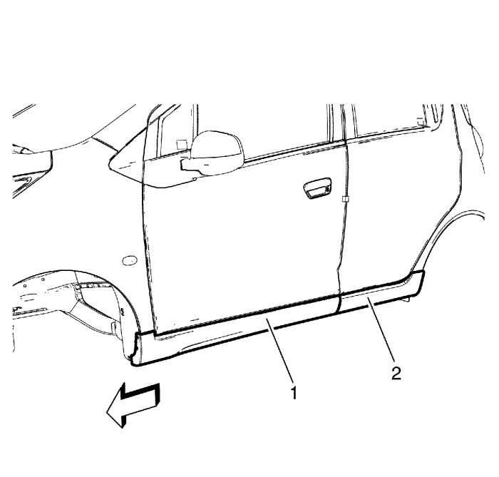
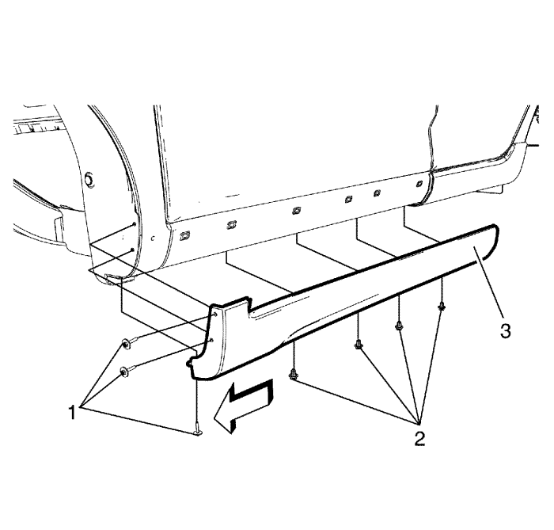
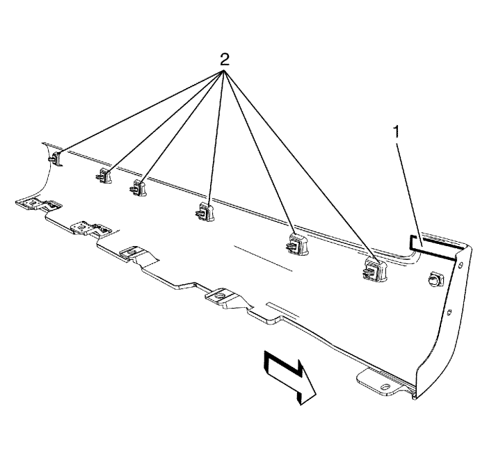
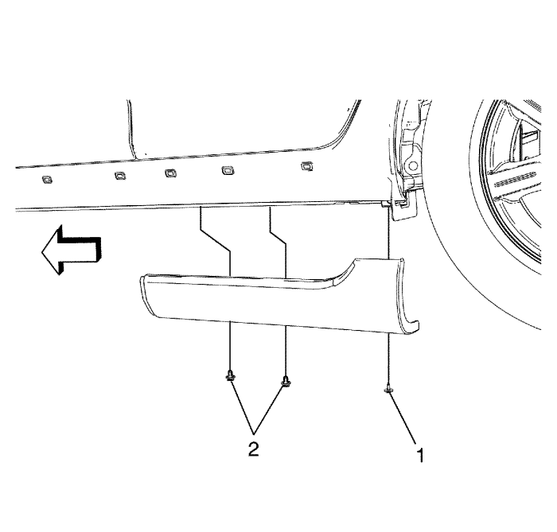
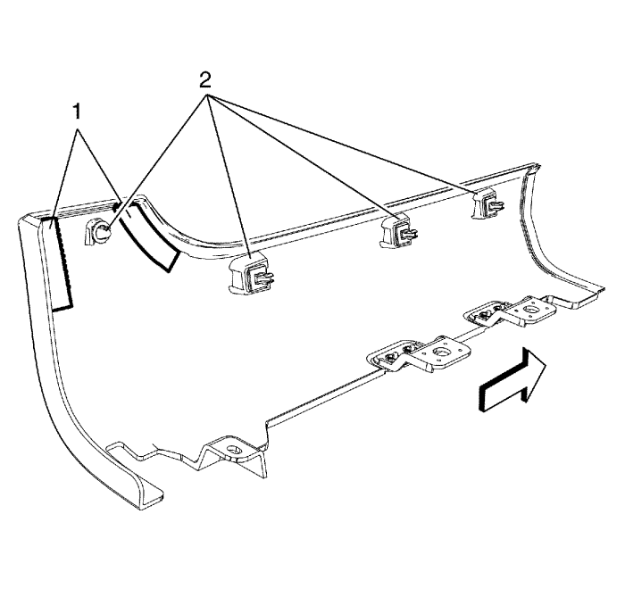

Spark
Sustitución de moldura de panel de estribo
Procedimiento de desmontaje
Eleve el vehículo y ponga soportes bajo él. Consultar
Elevación del vehículo y utilización de un gato
.
Desmonte la rueda delantera y los conjuntos de la rueda. Consultar
Desmontaje y montaje de la rueda y el neumático
.

Compruebe la moldura del panel de estribo delantero (1) y la moldura del panel de estribo trasero (2).

Desmonte los tornillos de la moldura del panel de estribo delantero (1).
Desmonte las grapas de fijación de la moldura del panel de estribo delantero (2).

Compruebe la cinta adhesiva doble (1) y las grapas de fijación de la moldura del panel de estribo delantero (2).
Desmonte la moldura del panel de estribo delantero.

Desmonte los tornillos de la moldura del panel de estribo trasero (1).
Desmonte las grapas de fijación de la moldura del panel de estribo trasero (2).

Compruebe las cintas adhesivas dobles (1) y las grapas de fijación de la moldura del panel de estribo trasero (2).
Procedimiento de montaje
Fije las cintas adhesivas dobles nuevas (1) y compruebe las grapas de fijación de la moldura (2).
Precaución:
Consulte
Precaución con las fijaciones
en la sección Prólogo
Monte el tornillo de la moldura del panel de estribo trasero y apriételo a
1,5 N·m (13 lib. pulg.)
.
Monte las grapas de fijación de la moldura del panel de estribo trasero.
Fije la cinta adhesiva doble nueva (1) y compruebe las grapas de fijación de la moldura (2).
Monte el tornillo de la moldura del panel de estribo delantero y apriételo a
1,5 N·m (13 lib. pulg.)
.
Monte las grapas de fijación de la moldura del panel de estribo delantero.
© Copyright Chevrolet. Reservados todos los derechos